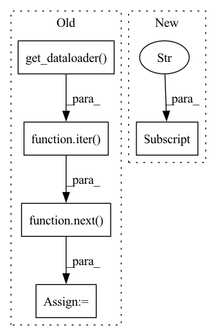

Pattern ID :1738
Before Change
)
// Extract xvectors from a validation sample
valid_x, valid_y = next(iter( valid_set.get_dataloader()) )
print("Extracting Xvector from a sample validation batch!")
xvectors = ext_brain.extract(valid_x)
print("Extracted Xvector.Shape: ", xvectors.shape)
After Change
)
xvect_brain.fit(
range(hparams["number_of_epochs"]),
hparams["train_data"] ,
hparams["valid_data"],
**hparams["loader_kwargs"],
)In pattern: SUPERPATTERN
Frequency: 3
Non-data size: 5
Instances Fragment ID: 8154156
Project Name: speechbrain/speechbrain
Commit Name: d656bc6618227a593465ff1a507ec955172eb4ac
Time: 2020-12-20
Author: aku.rouhe@aalto.fi
File Name: recipes/minimal_examples/neural_networks/Xvector/example_xvector_experiment.py
M Class Name: AnonimousClass
N Class Name: AnonimousClass
M Method Name: main(0)
N Method Name: main(0)
M Parent Class:
N Parent Class:
M File Name: recipes/minimal_examples/neural_networks/Xvector/example_xvector_experiment.py
N File Name: recipes/minimal_examples/neural_networks/Xvector/example_xvector_experiment.py
M Start Line: 91
M End Line: 106
N Start Line: 84
N End Line: 120
Before Change
sample_target_class_dataset, target_original_dataset = self.dataset.split_dataset(
target_class_dataset, self.poison_num)
sample_target_dataloader = self.dataset.get_dataloader(mode="train", dataset=sample_target_class_dataset,
batch_size=self.poison_num, num_workers=0)
target_imgs, _ = self.model.get_data(next(iter( sample_target_dataloader) ) )
full_set = self.dataset.get_dataset("train", full=False)
poison_set: TensorListDataset = None // TODOAfter Change
target_class_set = self.dataset.get_dataset("train", class_list=[self.target_class])
target_imgs_list, _ = dataset_to_list(target_class_set)
target_imgs = torch.stack(target_imgs_list[:self.poison_num]).to(env["device"] )
full_set = self.dataset.get_dataset("train")
poison_set: TensorListDataset = None // TODO Fragment ID: 8154152
Project Name: ain-soph/trojanzoo
Commit Name: 53cbd983257d3de6eb4536ca6972a9653563ee0b
Time: 2021-05-21
Author: ain-soph@live.com
File Name: trojanvision/attacks/backdoor/clean_label.py
M Class Name: CleanLabel
N Class Name: CleanLabel
M Method Name: attack(3)
N Method Name: attack(3)
M Parent Class: BadNet
N Parent Class: BadNet
M File Name: trojanvision/attacks/backdoor/clean_label.py
N File Name: trojanvision/attacks/backdoor/clean_label.py
M Start Line: 105
M End Line: 121
N Start Line: 104
N End Line: 116
Before Change
self.conv2d = nn.Conv2d(1, 1, 3, bias=False, padding=1)
self.conv2d.weight = nn.Parameter(kernel.view_as(self.conv2d.weight))
loader = self.dataset.get_dataloader(mode="train", batch_size=self.reflect_num, classes=[self.target_class],
shuffle=True, num_workers=0, pin_memory=False)
self.reflect_set, self.reflect_labels = next(iter( loader) ) // _images, _labels = next(iter(loader))
self.W = torch.zeros(reflect_num)
self.trainset = self.dataset.get_dataset(mode="train")After Change
def __init__(self, candidate_num: int = 100, m: int = 20, selection_iter: int = 10, inner_epoch: int = 1, **kwargs):
super().__init__(**kwargs)
self.param_list["reflection"] = ["candidate_num", "selection_iter", "m", "inner_epoch"]
self.candidate_num: int = candidate_num
self.selection_iter: int = selection_iter
self.m: int = m Fragment ID: 8154153
Project Name: ain-soph/trojanzoo
Commit Name: 3b0c9ae8b0af03ee032185c658a6eaed04bc141b
Time: 2020-09-03
Author: ain-soph@live.com
File Name: trojanzoo/attack/backdoor/reflection_backdoor.py
M Class Name: Reflection_Backdoor
N Class Name: Reflection_Backdoor
M Method Name: __init__(5)
N Method Name: __init__(4)
M Parent Class: BadNet
N Parent Class: BadNet
M File Name: trojanzoo/attack/backdoor/reflection_backdoor.py
N File Name: trojanzoo/attack/backdoor/reflection_backdoor.py
M Start Line: 28
M End Line: 52
N Start Line: 19
N End Line: 25